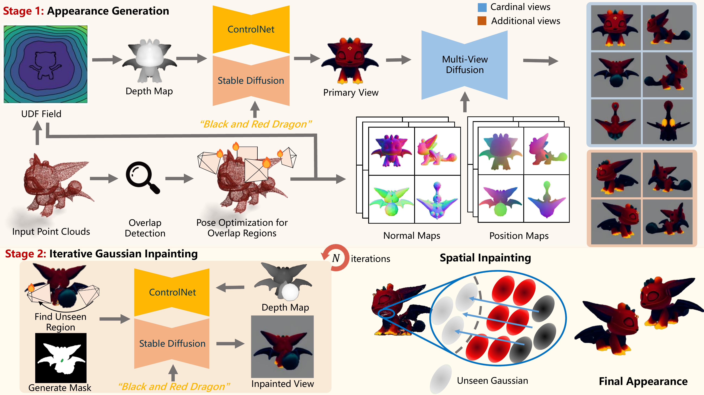
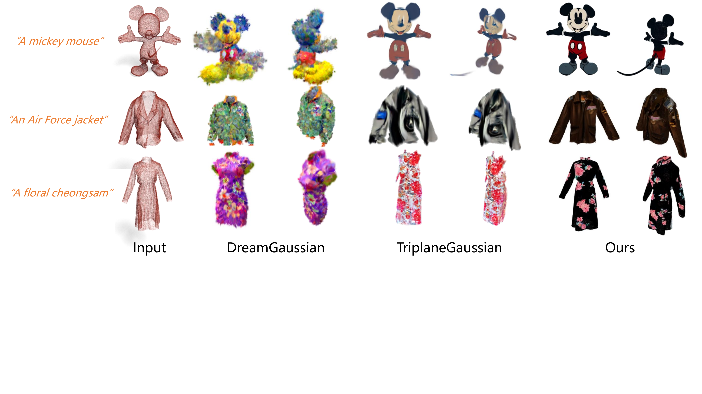
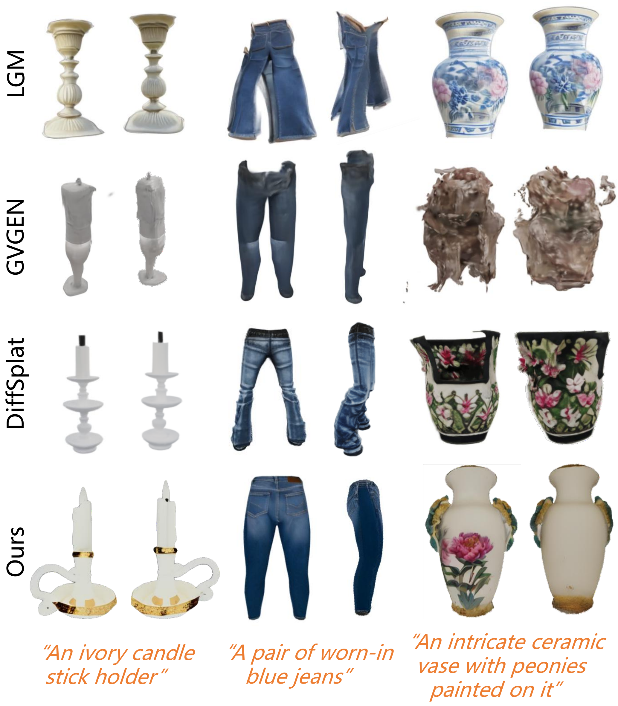

Left: Diverse shapes generated by GaussianGrow. Right: The Gaussian generation pipeline of GaussianGrow. Reference point clouds can be obtained through large-scale retrieval or sensor scanning, from which Gaussians are grown under text guidance.
Left: Diverse shapes generated by GaussianGrow. Right: The Gaussian generation pipeline of GaussianGrow. Reference point clouds can be obtained through large-scale retrieval or sensor scanning, from which Gaussians are grown under text guidance.
3D Gaussian Splatting has demonstrated superior performance in rendering efficiency and quality, yet the generation of 3D Gaussians still remains a challenge without proper geometric priors. Existing methods have explored predicting point maps as geometric references for inferring Gaussian primitives, while the unreliable estimated geometries may lead to poor generations. In this work, we introduce GaussianGrow, a novel approach that generates 3D Gaussians by learning to grow them from easily accessible 3D point clouds, naturally enforcing geometric accuracy in Gaussian generation. Specifically, we design a text-guided Gaussian growing scheme that leverages a multi-view diffusion model to synthesize consistent appearances from input point clouds for supervision. To mitigate artifacts caused by fusing neighboring views, we constrain novel views generated at non-preset camera poses identified in overlapping regions across different views. For completing the hard-to-observe regions, we propose to iteratively detect the camera pose by observing the largest un-grown regions in point clouds and inpainting them by inpainting the rendered view with a pretrained 2D diffusion model. The process continues until complete Gaussians are generated. We extensively evaluate GaussianGrow on text-guided Gaussian generation from synthetic and even real-scanned point clouds.

Overview of GaussianGrow. Stage 1. We leverage depth-aware ControlNet for primary view generation, with a geometry-aware diffusion model for multi-view synthesis. Additional views are generated for improving appearances in overlap regions by optimizing camera poses to observe overlap regions. Gaussians are optimized to grow with supervision from both cardinal and additional views. Stage 2. We iteratively inpaint Gaussians by optimizing camera poses to observe unseen regions, and inpaint them by inpainting the rendering view with a pretrained 2D diffusion model. The iteration continues until complete Gaussians are generated. A spatial Gaussian inpainting strategy is also used to diffuse appearance from optimized Gaussians to the hard-to-observe ones.
Visual comparison on the Objaverse dataset shows that GaussianGrow uses point clouds instead of meshes, yet achieves better visual quality and geometric fidelity.

Visual comparison with DreamGaussian and TriplaneGaussian on the task of Point-to-Gaussian generation.

Text-to-3D comparisons on T3Bench. GaussianGrow enables text-to-3D generation by first retrieving point clouds using Uni3D, then generating 3D Gaussians with text guidance.

GaussianGrow generates varied appearances for identical geometric inputs by simply changing text prompts. The same point cloud processed with different textual descriptions produces distinct visual styles while maintaining geometric accuracy.
@inproceedings{gaussiangrow,
title={GaussianGrow: Geometry-aware Gaussian Growing from 3D Point Clouds with Text Guidance},
author={Zhang, Weiqi and Zhou, Junsheng and Geng, Haotian and Shi, Kanle and Xu, Shenkun and Fang, Yi and Liu, Yu-Shen},
booktitle={Proceedings of the IEEE/CVF Conference on Computer Vision and Pattern Recognition},
year={2026}
}